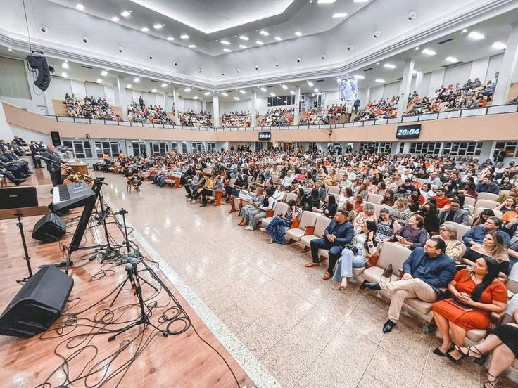
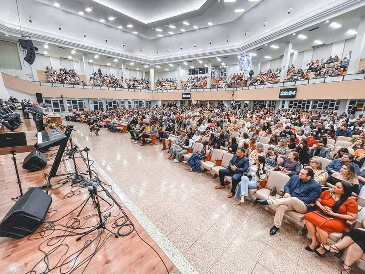
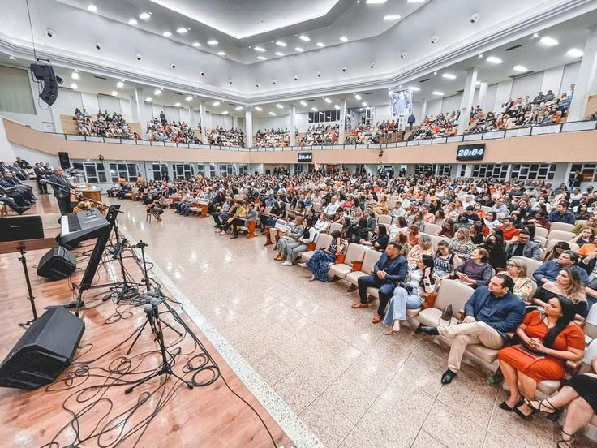

Leadership Training
Equipping men and women with biblical principles, practical skills, and spiritual depth to lead with excellence in church and society.

Equipping men and women with biblical principles, practical skills, and spiritual depth to lead with excellence in church and society.


Raising the next generation of godly leaders through mentorship, discipleship, and accountability.

Interactive training sessions that equip leaders with practical ministry skills and leadership strategies.

Spiritual renewal and vision casting retreats designed to strengthen leaders in prayer, fellowship, and direction.